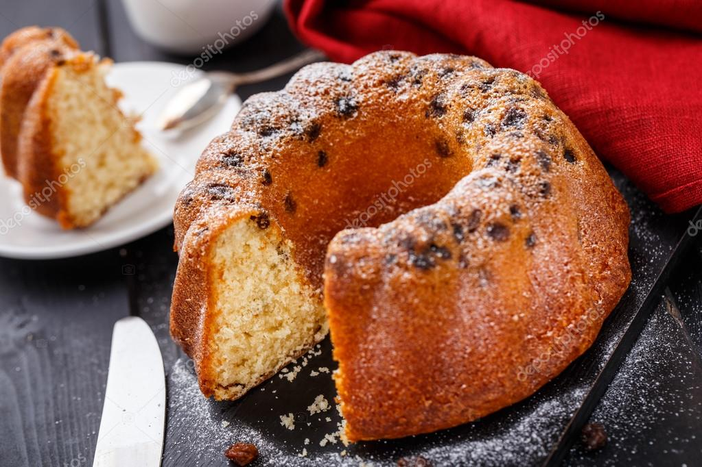

ÜZÜMLÜ KEK YAPIMI

Malzemeler:
- Üç adet yumurta
- Altı yemek kaşığı şeker
- Sekiz yemek kaşığı şeker
- Üç yemek kaşığı un
- Bir çay bardağı zeytinyağı
- Bir er paket kabartma tozu ve vanilya
- Kuru üzüm, kuru kayısı ve keçiboynuzu tozu
-
Tarifi:
Şeker, yoğurt ve zeytinyağı ekleyip karıştır
Kabartma tozu ve vanilya ekle
Kuru üzüm ve kuru kayısıları ince ince doğra ve ekle
Üstüne keçi boynuzu tozu serp
Önceden ısıtılmış 170 derece olan fırında 25 dk pişir